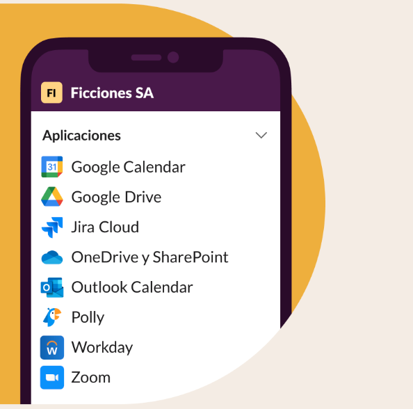

EMPRESAS DE TODO EL MUNDO YA CONFIAN EN SLACK


Reune a tu equipo
Los canales son el corazón de Slack. Son espacios organizados para todo el mundo que contienen todo lo necesario para trabajar. Los canales permiten conectarse entre departamentos, oficinas, zonas horarias e incluso con otras empresas.
Obtener mas informacion sobre los canalesSelecciona como quieres trabajar
Slack te otorga la flexibilidad para trabajar cuando, donde y como tú quieras. Puedes chatear, enviar clips de audio y vídeo o unirte a una junta para discutir asuntos en directo.
Obtén más información acerca de la comunicación flexible

Bring your team together
At the heart of Slack are channels: organized spaces for everyone and everything you need for work.
Learn more about channels